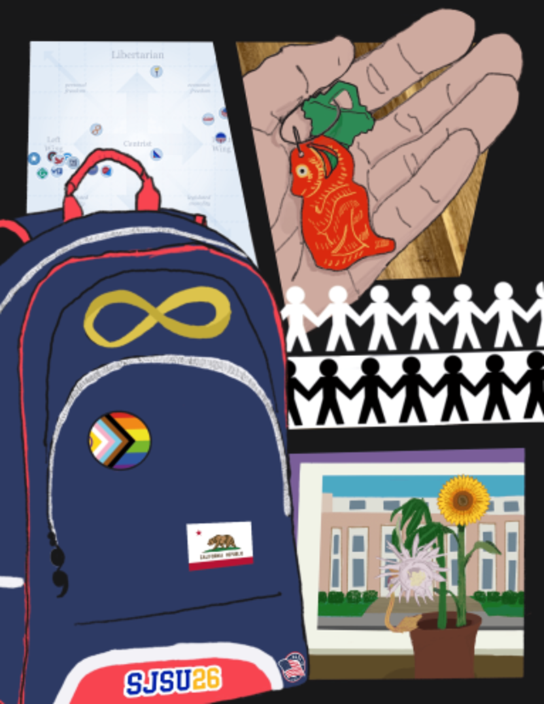

About Me
Quynh Luong is a second generation Vietnamese-American immigrant from Stockton, California. He is currently pursuing a BFA in Digital Media Art at San Jose State University, and intends on focusing on telling stories through digital illustration, 3D modeling, and video. Growing up, he found comfort in animated media, and through many of them he’s developed his sense of self and an understanding of the factors that shape people. With this in mind, Luong is also minoring in Political Science, a subject which informs the way he considers the world and his general practice. His works in content often range from his own cultural experiences growing up to the power structures that society lives under. Luong hopes to create a space for viewers to broach topics affecting their own lives through the stories that are told through his characters and their backgrounds that may parallel circumstances in viewers’ own lives. Just as analyzing fictional characters and their motivations in various media have developed his own critical thinking skills, he hopes that his own stories garner investment and can contribute to more people seeking to understand and empathize with the sectors of life that may not always be focused on in the popular culture.
My Work

Identity Portrait
This collage made in Procreate is a self-portrait of my own interpretation of my identity from my likes/dislikes, to my upbringing, as well as my core values in life.

Mallory the Cassowary
Above is a sculpted anthropomorphic cassowary who is a part of a larger story of mine in development.

Panopticon Hell
I modeled my own interpretation of Jeremy Bentham's Panopticon through the lens of self-doubt, creating a self-debilitating prison.

Homage to Robert Frank
When I first started out as a freshman, I was still working on becoming more independent so I was only really able to take photos outside when on the way to San Jose back from my hometown. In the spirit of Robert Frank's The Americans, I provided my own take of viewing the US through an "outsider's point of view."
Contact Me! :D
Email: Lg.quynh.aL(at).com